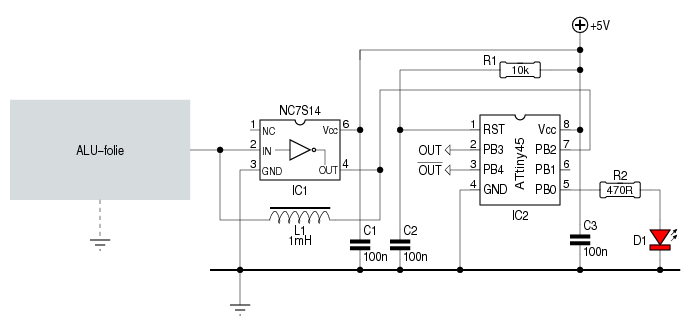
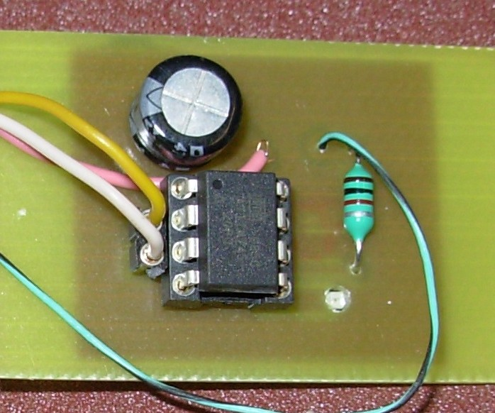
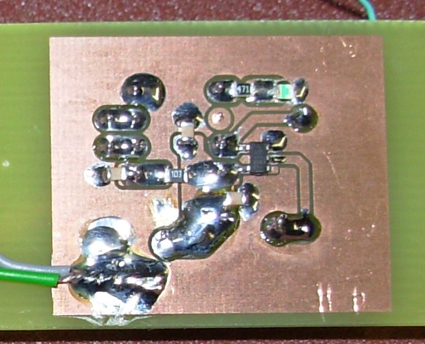

Wat is er mooier, dan lichten die automatisch gaan branden als
men in het donker door de woning loopt?
Daarvoor zijn wel sensors nodig, die de nabijheid van een
menselijk lichaam kunnen vaststellen. En dan nog liefst een
sensor die we verborgen kunnen opstellen zodat hij zijn omgeving
niet ontsiert.
Dit artikel beschrijft de bouw en de werking van zo'n sensor.
 Het schema hiernaast toont een inverter met een Schmitt-trigger ingang (IC1), waarbij een spoel (L1), geholpen door een condensator, de inverter doet oscilleren. De frequentie waarop dit gebeurt wordt bepaald door de resonatiefrequentie van de L/C-combinatie.
De spoel kennen we, het is een gewone RF-choke van 1000μH. De condensator is een ander verhaal.
Enerzijds bestaat die uit een vel aluminium-folie, dat op dik
papier is gekleefd. Dit geheel krijgt een plaatse onder het
tapijt. De folie vormt een condensator in combinatie
met zijn omgeving. De capaciteit van die “condensator” kan
heel klein zijn, denk maar aan een droge woning, opgebouwd uit
baksteen en hout. Of hij kan juist (relatief) groot zijn, als er gewapend
beton in de nabijheid is.
Anderzijds is er ook nog de paracitaire capaciteit die bij de
ingang van IC1 hoort. Die bedraagt ―volgend de datasheet van
de NC7S14― 10pF. Erg weinig, maar niet te verwaarlozen.
Een praktijkopstelling ten huize van ondergetekende toont aan
dat IC1 op een frequentie van iets minder dan 1MHz oscilleert.
De capaciteit zou bijgevolg (ongeveer) 28pF moeten bedragen.
Als we daar de ingangscapaciteit van IC1 aftrekken, blijft er
18pF over.
Zodra een hand (of een ander lichaamsdeel) de ALU-folie tot
minder dan 1cm nadert, zakt de frequentie naar ±800kHz.
Dat betekent, dat de capaciteit stijgt naar 40pF waarvan 30pF
voor rekening van de ALU-folie is.
Die frequentiezwaai kan met eenvoudige hulpmiddelen gedetecteerd worden. Een monoflop, die als pulsverkorter fungeert, en een R/C-filter volstaan om de frequentie te vertalen naar een analoge spanning. Een comparator volstaat dan, om variaties in die analoge spanning vast te stellen.
Die comparator moet dan wel precies ingesteld worden. En juist
daar kan het fout gaan. Allerlei omgevingsfactoren kunnen de
capaciteit van de ALU-folie beïnvloeden, en dus ook de
frequentie.
Ik denk dan voornamelijk aan de luchtvochtigheid en de
temperatuur.
Dat kan tot gevolg hebben, dat de comparator regelmatig moet
bijgesteld worden.
Als we het detecteren aan een kleine microcontroller overlaten, kan die anticiperen op kleine, langzame frequentievariaties.
De μC in kwestie is een ATtiny45.
De uitgang van de oscillator gaat naar PB2. Deze pin kan als
externe klok geconfigureerd worden, en stuurt Timer0 aan.
Timer0 doet weinig meer dan tellen - zonder ingrijpen gaat TCNT0
van 0 naar 255 om vervolgens weer naar 0 te springen.
De μC beschikt over een tweede timer/counter: Timer1.
Timer1 geven we een klok van 2MHz ―zowat het dubbele van
Timer0, dus― en we laten hem een interrupt produceren als zijn
tellerstand van 255 naar 0 gaat.
Als de ISR1 telkens TCNT0
uitleest en vervolgens op 0 zet, kennen we de frequentie die de
oscillator produceert. Door de gemeten frequentie uit te
middelen worden ongewenste externe invloeden uitgeschakeld.
Enkel wanneer een plotse frequentiedaling van meer dan 1/16e
wordt vastgesteld, gaat de μC daar op reageren.
De volledige code kan hier bekeken worden.

Veel valt er op de print niet te bespeuren - enkel de μC en
het spoeltje. En ja, ook nog een LED'je dat zijn licht door een
opening laat schijnen.
De overige onderdelen zijn SMD-componenten die zich aan de
onderzijde bevinden:

Het kan uiteraard nog kleiner, als ook voor de ATtiny45 en de
spoel SMD-uitvoeringen gebruikt worden. Maar het huidige printje
is al kleing genoeg om een plaatsje te vinden achter een plint
of een deurstijl.